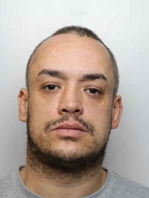

Crime - 2026-02-03: Marcus Ned Jailed for Shootings
Sheffield, UK
Crime Marcus Ned Sheffield Firearms
A man was jailed for two shootings in Sheffield after police swiftly identified him as the suspect.
Source#Crime #Marcus Ned #Sheffield #Firearms
Thumbnail

People Involved
| Name | G | Nationality | Role | Age | Date of Birth | Offence(s) | Sentence |
|---|---|---|---|---|---|---|---|
| Marcus Ned | 🌐 | Unknown | Offender | 37.0 | Unknown |
Possession of a firearm with intent to cause fear of violence
Attempted grievous bodily harm
|
9 years
9 years
|

A man was jailed for two shootings in Sheffield after police swiftly identified him as the suspect. Marcus Ned, 37, was charged with possession of a firearm with intent to cause fear of violence and attempted grievous bodily harm. He received a nine-year sentence following a court appearance. The incidents occurred on April 3, 2026, with police deploying armed units to secure the area. The shootings prompted a rapid response from South Yorkshire Police, who used CCTV and witness statements to link Ned to the crimes. During the pursuit, Ned fled but was eventually located in a garden after police tracked his movements. A firearm and ammunition were recovered from the scene, confirming his involvement. Like, subscribe and share if you find this information useful.